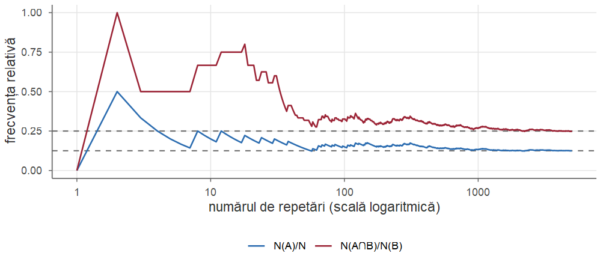
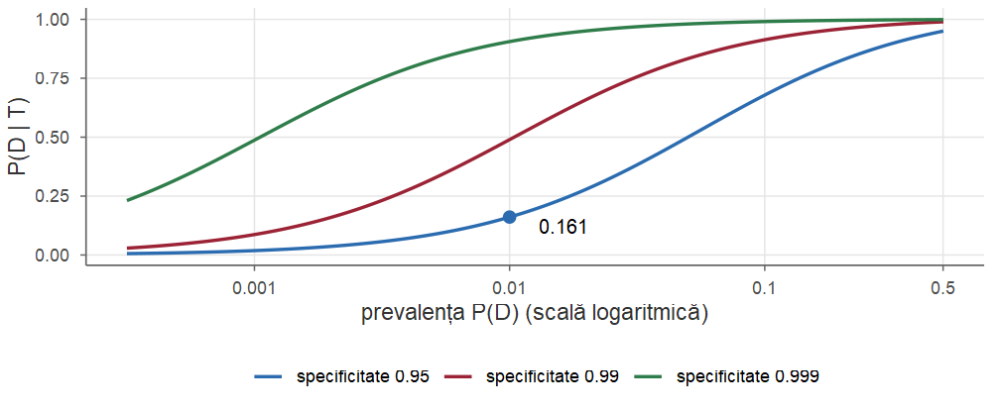
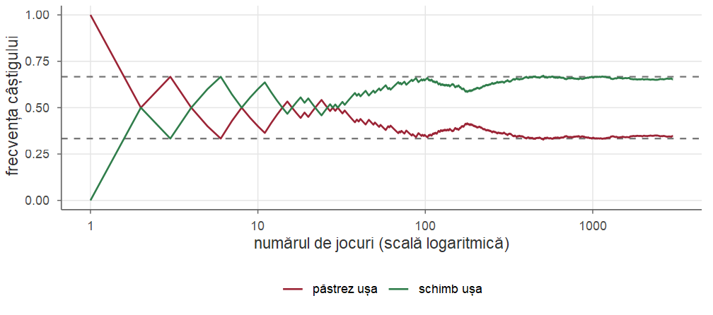
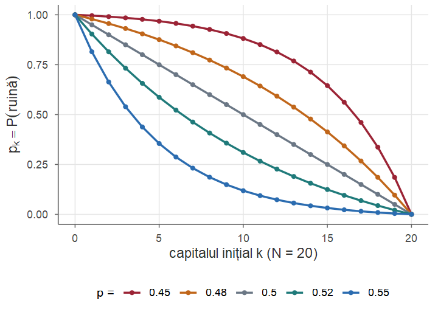

Cursul 2. Probabilitate condiționată și independență
Probabilități și Statistică · Cursul 2
Alexandru Amărioarei
Universitatea din București · Facultatea de Matematică și Informatică · 2026–2027
Planul cursului
| Partea | Conținut |
|---|---|
| I | Probabilitate condiționată: motivație, definiție, exemple; regula înmulțirii și arbori de probabilitate |
| II | Formula probabilității totale; formula lui Bayes; teste de diagnostic, eroarea ratei de bază, eroarea procurorului |
| III | Independența evenimentelor; fiabilitatea sistemelor; independență condiționată; problema lui Monty Hall |
| IV | Urna lui Pólya, ruina jucătorului; exerciții rezolvate; recapitulare |
Obiectivele cursului
La finalul acestui curs, studenții ar trebui să poată:
- calcula și interpreta o probabilitate condiționată \(\PP(A\mid B)\) (restrângerea spațiului stărilor, interpretarea frecvenționistă);
- folosi regula înmulțirii și arborii de probabilitate pentru experimente în etape;
- aplica formula probabilității totale și formula lui Bayes (a priori → a posteriori);
- recunoaște eroarea ratei de bază și eroarea procurorului;
- verifica independența a două sau mai multe evenimente și distinge independența de independența condiționată;
- rezolva probleme clasice: Monty Hall, urna lui Pólya, ruina jucătorului.
Recapitulare: câmpul de probabilitate
Din Cursul 1 folosim:
- câmpul de probabilitate \((\Omega,\F,\PP)\): \(\F\) este o \(\sigma\)-algebră, \(\PP(\Omega)=1\) și \(\PP\) este \(\sigma\)-aditivă: \[ \PP\Big(\bigcup_{n\ge1}A_n\Big)=\sum_{n\ge1}\PP(A_n)\quad\text{pentru } A_n \text{ incompatibile două câte două}; \]
- reguli de calcul: \(\PP(A^c)=1-\PP(A)\), \(\PP(A\setminus B)=\PP(A)-\PP(A\cap B)\), \(\PP(A\cup B)=\PP(A)+\PP(B)-\PP(A\cap B)\);
- sistem complet de evenimente (partiție): \(B_i\cap B_j=\emptyset\) pentru \(i\ne j\) și \(\bigcup_iB_i=\Omega\);
- modelul clasic (Laplace): \(\PP(A)=|A|/|\Omega|\), pentru rezultate egal probabile.
Recapitulare: numărare și simulare
- Extrageri de \(k\) bile din \(n\): cu revenire și ordonat \(n^k\); fără revenire și ordonat \(A_n^k\); fără revenire și neordonat \(\binom nk\).
- Evenimentul contrar simplifică adesea calculul: \(\PP(\text{cel puțin un } 6 \text{ în } 4 \text{ aruncări})=1-(5/6)^4\) (de Méré).
- Interpretarea frecvenționistă: \(\PP(A)\approx N(A)/N\) pentru un număr mare \(N\) de repetări — baza simulărilor în R.
Observație
În Cursul 1 am folosit „intuitiv” faptul că aruncările succesive ale unei monede sau ale unui zar „nu se influențează”. Astăzi dăm acestei idei un sens precis: independența.
Partea I — Probabilitate condiționată. Regula înmulțirii
Informația schimbă probabilitățile
În practică informația se acumulează treptat: un punct apare pe ecranul unui radar, un test medical iese pozitiv, primele cărți extrase dintr-un pachet sunt deja cunoscute. Întrebări tipice:
- un punct apare pe ecranul unui radar: care este probabilitatea să fie un avion inamic?
- care este șansa ca un individ să fie infectat cu SARS-CoV-2, știind că testul său a ieșit pozitiv?
- merită să ne schimbăm alegerea în jocul lui Monty Hall?
Probabilitățile condiționate modelează modul în care se schimbă probabilitatea unui eveniment de interes atunci când avem informații suplimentare despre experiment.
Trei aruncări cu o monedă
Exemplul 1 (Trei aruncări cu o monedă)
Aruncăm de trei ori o monedă echilibrată: \(\Omega=\{H,T\}^3\), \(|\Omega|=8\), \(\PP\) = echipartiția pe \(\Omega\):
| \(\mathbf{HHH}\) | \(HHT\) | \(THH\) | \(THT\) |
| \(HTH\) | \(HTT\) | \(TTH\) | \(TTT\) |
- Care este probabilitatea să obținem \(HHH\)? Evenimentul \(A=\{HHH\}\) conține un singur rezultat, deci \(\PP(A)=1/8\).
Trei aruncări: știm că prima este cap
Exemplu (Trei aruncări cu o monedă (continuare))
- Știm că la prima aruncare am obținut cap, adică s-a realizat \[ B=\{\text{cap la prima aruncare}\}=\{HHH,HHT,HTH,HTT\}. \] Rezultatele posibile nu mai sunt cele \(8\), ci doar cele \(4\) din \(B\), care rămân egal probabile. Dintre ele doar \(HHH\) realizează \(A\): \[ \PP(A\mid B)=\frac14 \qquad(\text{„probabilitatea lui } A \text{ știind că } B \text{ s-a realizat”}). \] Informația suplimentară a dublat probabilitatea evenimentului de interes.
Informația „\(B\) s-a realizat” restrânge spațiul stărilor de la \(\Omega\) la \(B\); \(A\) „supraviețuiește” doar prin \(A\cap B\), iar probabilitățile se renormalizează: \(\PP(A\mid B)=\frac{|A\cap B|}{|B|}=\frac{\PP(A\cap B)}{\PP(B)}\).
Abordarea frecvenționistă
Repetăm experimentul de \(N\) ori și notăm \(N(A)\), \(N(B)\), \(N(A\cap B)\) numărul de repetări în care s-a realizat \(A\), \(B\), respectiv ambele. Ne uităm doar la experimentele în care \(B\) s-a realizat: \[ \frac{N(A\cap B)}{N(B)} \quad\longleftarrow\quad \begin{aligned} &\text{numărul de experimente în care s-au realizat și } A \text{ și } B\\ &\text{numărul de realizări ale lui } B \end{aligned} \] Cum \(\PP(A)\approx N(A)/N\) pentru \(N\) mare, \[ \frac{N(A\cap B)}{N(B)}=\frac{N(A\cap B)/N}{N(B)/N}\approx\frac{\PP(A\cap B)}{\PP(B)} . \]
Frecvența condiționată se stabilizează
\(N=5000\) de repetări ale Exemplului 1: \(N(A)/N\to\PP(A)=1/8\), iar \(N(A\cap B)/N(B)\to\PP(A\mid B)=1/4\).
Probabilitate condiționată: definiție
Definiția 1 (Probabilitate condiționată)
Fie \((\Omega,\F,\PP)\) un câmp de probabilitate și \(A,B\in\F\) cu \(\PP(B)>0\). Probabilitatea condiționată a lui \(A\) la \(B\) (probabilitatea lui \(A\) știind că \(B\) s-a realizat) se notează \(\PP(A\mid B)\) și este \[ \PP(A\mid B)=\frac{\PP(A\cap B)}{\PP(B)}. \]
Revenind la Exemplul 1: cum \(A\subseteq B\), \[ \PP(A\mid B)=\frac{\PP(A\cap B)}{\PP(B)}=\frac{\PP(A)}{\PP(B)}=\frac{1/8}{4/8}=\frac14 . \]
Comentarii asupra definiției
Observație
- \(A\mid B\) nu este un eveniment; \(\PP(A\mid B)\) este un număr: probabilitatea lui \(A\) într-un „univers” în care știm că \(B\) s-a realizat. \(A\) este evenimentul de interes, \(B\) este evenimentul care s-a realizat (informația).
- În contextul formulei lui Bayes, \(\PP(A)\) se numește probabilitate a priori (prior), iar \(\PP(A\mid B)\) probabilitate a posteriori (posterior): gradul de încredere în \(A\) înainte, respectiv după aflarea informației \(B\).
- Condiția \(\PP(B)>0\) este esențială: nu are sens să condiționăm la un eveniment imposibil.
Extrageri succesive dintr-un pachet de cărți
Exemplul 2 (Extrageri succesive dintr-un pachet de cărți)
Din \(52\) de cărți extragem aleator, succesiv și fără întoarcere, două cărți. Fie \(A\) = „prima carte este de inimă roșie”, \(B\) = „a doua carte este de inimă roșie”, \(C\) = „a doua carte este de culoare roșie”. Calculăm \(\PP(B\mid A)\), \(\PP(C\mid A)\), \(\PP(A\mid B)\), \(\PP(A\mid C)\).
\(\PP(B\mid A)\). Dacă prima a fost inimă roșie, au rămas \(51\) de cărți, dintre care \(12\) inimi roșii: intuitiv \(\PP(B\mid A)=12/51\). Cu definiția: \(\PP(A)=13/52=1/4\), \(\PP(A\cap B)=\frac{13\cdot 12}{52\cdot 51}=\frac{3}{51}\) (perechi ordonate), deci \[ \PP(B\mid A)=\frac{\PP(A\cap B)}{\PP(A)}=\frac{3/51}{1/4}=\frac{12}{51}. \]
Cărți: celelalte probabilități condiționate
Exemplu (Extrageri din pachet (continuare))
\(\PP(C\mid A)\). Rămân \(12\) inimi roșii și \(13\) romburi: \(25\) de cărți roșii din \(51\), deci \(\PP(C\mid A)=25/51\).
\(\PP(A\mid B)\). Fără informație despre prima carte, a doua este „la fel de aleatoare” ca prima: \(\PP(B)=1/4\) (justificare riguroasă în Exemplul 6). Atunci \[ \PP(A\mid B)=\frac{\PP(A\cap B)}{\PP(B)}=\frac{3/51}{1/4}=\frac{12}{51}=\PP(B\mid A). \] Deși \(A\) se referă la un moment anterior lui \(B\), \(\PP(A\mid B)\) are sens: condiționarea exprimă o relație informațională, nu una cauzală.
Cărți: \(\PP(A\mid C)\neq\PP(C\mid A)\)
Exemplu (Extrageri din pachet (continuare))
\(\PP(A\mid C)\). Avem \(\PP(C)=26/52=1/2\) și \(\PP(A\cap C)=\frac{13\cdot 25}{52\cdot 51}=\frac{25}{204}\), deci \[ \PP(A\mid C)=\frac{25/204}{1/2}=\frac{25}{102}\neq\frac{25}{51}=\PP(C\mid A). \]
Familia cu doi copii
Exemplul 3 (Familia cu doi copii)
O familie are doi copii. a) Care este probabilitatea ca ambii să fie fete, știind că cel mai mare este fată? b) Dar știind că cel puțin unul este fată?
Ipoteze: fiecare copil este, cu probabilitate \(1/2\), băiat (\(B\)) sau fată (\(F\)); sexul unui copil nu îl influențează pe al celuilalt. Notând întâi primul născut, \(\Omega=\{BB,BF,FB,FF\}\) cu echipartiția. Fie \[ A=\{FF\},\qquad E=\text{„cel mai mare este fată”}=\{FB,FF\},\qquad G=\text{„cel puțin o fată”}=\{BF,FB,FF\}. \]
Familia cu doi copii: soluție
Exemplu (Familia cu doi copii (continuare))
\[ \PP(A\mid E)=\frac{\PP(A\cap E)}{\PP(E)}=\frac{1/4}{2/4}=\frac12,\qquad \PP(A\mid G)=\frac{\PP(A\cap G)}{\PP(G)}=\frac{1/4}{3/4}=\frac13 . \] Aparent paradoxal: informația din b) este mai slabă decât cea din a) (\(E\subset G\)), iar probabilitatea condiționată este mai mică. Intuitiv, \(G\) exclude doar \(BB\), lăsând trei cazuri egal probabile, dintre care unul favorabil.
#> P_FF_dat_E P_FF_dat_G
#> 0.4996 0.3335Probabilitatea condiționată este o probabilitate
Fixând evenimentul-informație, \(\PP(\cdot\mid A)\) moștenește toate proprietățile unei probabilități: orice rezultat demonstrat pentru probabilități rămâne adevărat pentru probabilități condiționate la un eveniment fixat.
Propoziția 2 (Probabilitatea condiționată este o măsură de probabilitate)
Fie \((\Omega,\F,\PP)\) un câmp de probabilitate și \(A\in\F\) cu \(\PP(A)>0\). Atunci funcția \[ \mathbb{Q}:\F\to[0,1],\qquad \mathbb{Q}(B)=\PP(B\mid A), \] este o măsură de probabilitate pe \((\Omega,\F)\), concentrată pe \(A\) (adică \(\mathbb{Q}(A)=1\)).
Demonstrația propoziției
Demonstrație. Pentru orice \(B\in\F\), \(0\le\PP(A\cap B)\le\PP(A)\), deci \(\mathbb{Q}(B)\in[0,1]\). Apoi \[ \mathbb{Q}(\Omega)=\frac{\PP(\Omega\cap A)}{\PP(A)}=1,\qquad \mathbb{Q}(A)=\frac{\PP(A\cap A)}{\PP(A)}=1,\qquad \mathbb{Q}(\emptyset)=\frac{\PP(\emptyset)}{\PP(A)}=0 . \] Fie \((A_i)_{i\ge1}\) disjuncte două câte două. Atunci \(\big(\bigcup_{i}A_i\big)\cap A=\bigcup_{i}(A_i\cap A)\), iar \((A_i\cap A)_{i}\) sunt tot disjuncte. Din \(\sigma\)-aditivitatea lui \(\PP\), \[ \mathbb{Q}\Big(\bigcup_{i\ge1}A_i\Big)=\frac{\PP\big(\bigcup_{i\ge1}(A_i\cap A)\big)}{\PP(A)}=\sum_{i\ge1}\frac{\PP(A_i\cap A)}{\PP(A)}=\sum_{i\ge1}\mathbb{Q}(A_i). \]■
Consecințe. Condiționare în doi pași
Observație
Pentru \(\PP(A)>0\) au loc, de exemplu, \[ \PP(B^c\mid A)=1-\PP(B\mid A),\qquad \PP(B\cup C\mid A)=\PP(B\mid A)+\PP(C\mid A)-\PP(B\cap C\mid A). \] Putem condiționa în doi pași: dacă \(\mathbb{Q}(\cdot)=\PP(\cdot\mid C)\) și \(\PP(B\cap C)>0\), atunci \[ \mathbb{Q}(A\mid B)=\frac{\mathbb{Q}(A\cap B)}{\mathbb{Q}(B)}=\frac{\PP(A\cap B\cap C)/\PP(C)}{\PP(B\cap C)/\PP(C)}=\PP(A\mid B\cap C). \] Notăm \(\PP(A\mid B,C):=\PP(A\mid B\cap C)\) — probabilitatea lui \(A\) știind că atât \(B\) cât și \(C\) s-au realizat.
Atenție: primul argument, nu al doilea
Atenție!
Probabilitatea condiționată este o măsură de probabilitate în primul argument, nu în al doilea:
- întotdeauna \(\PP(A\mid B)+\PP(A^c\mid B)=1\);
- în general \(\PP(A\mid B)+\PP(A\mid B^c)\neq 1\) (de exemplu, pentru \(A=\Omega\) suma este \(2\)).
Exemplu: la aruncarea unui zar, \(A=\{6\}\), \(B=\{\text{par}\}\): \(\PP(A\mid B)=1/3\), \(\PP(A\mid B^c)=0\), suma este \(1/3\neq1\); în schimb \(\PP(A\mid B)+\PP(A^c\mid B)=1/3+2/3=1\).
Regula înmulțirii pentru două evenimente
Din definiție, dacă \(\PP(A)>0\) și \(\PP(B)>0\), \[ \PP(A\cap B)=\PP(A\mid B)\,\PP(B)=\PP(B\mid A)\,\PP(A). \] Probabilitatea ca ambele evenimente să se realizeze = probabilitatea primului × probabilitatea celui de-al doilea știind că primul s-a realizat.
Această formă este adesea mai naturală decât definiția: în multe modele probabilitățile condiționate sunt date (fac parte din descrierea experimentului), iar probabilitățile intersecțiilor se calculează din ele.
Regula înmulțirii
Teorema 3 (Regula înmulțirii)
Pentru orice evenimente \(A_1,A_2,\dots,A_n\in\F\) cu \(\PP(A_1\cap A_2\cap\dots\cap A_{n-1})>0\), \[ \PP(A_1\cap\dots\cap A_n)=\PP(A_1)\,\PP(A_2\mid A_1)\,\PP(A_3\mid A_1\cap A_2)\cdots\PP(A_n\mid A_1\cap\dots\cap A_{n-1}). \]
Demonstrație. Cum \(A_1\supseteq A_1\cap A_2\supseteq\dots\supseteq A_1\cap\dots\cap A_{n-1}\), toate numitorii sunt pozitivi. Produsul este telescopic: \[ \PP(A_1)\cdot\frac{\PP(A_1\cap A_2)}{\PP(A_1)}\cdot\frac{\PP(A_1\cap A_2\cap A_3)}{\PP(A_1\cap A_2)}\cdots\frac{\PP(A_1\cap\dots\cap A_n)}{\PP(A_1\cap\dots\cap A_{n-1})}=\PP(A_1\cap\dots\cap A_n). \] Pentru \(n=3\), cu \(B=A_1\cap A_2\): \(\PP(A_1\cap A_2\cap A_3)=\PP(A_3\mid B)\PP(B)=\PP(A_3\mid A_1\cap A_2)\PP(A_2\mid A_1)\PP(A_1)\).■
Arbori de probabilitate
Un experiment desfășurat în etape se reprezintă printr-un arbore:
- fiecare nod = o situație intermediară;
- fiecare ramură este etichetată cu probabilitatea condiționată de a o urma, știind drumul parcurs până în acel nod;
- probabilitatea unei frunze (un drum complet) = produsul probabilităților de pe ramuri (regula înmulțirii);
- suma probabilităților ramurilor care pleacă dintr-un nod este \(1\).
Vom vedea că suma probabilităților frunzelor în care se realizează un eveniment dă probabilitatea acestuia (formula probabilității totale).
Radarul
Exemplul 4 (Radarul)
Dacă o aeronavă apare într-o anumită zonă, radarul declanșează alarma cu probabilitatea \(0.99\). Dacă nicio aeronavă nu este prezentă, radarul declanșează (fals) alarma cu probabilitatea \(0.10\). În zonă poate apărea o aeronavă cu probabilitatea \(0.05\).
Care este probabilitatea să nu avem aeronavă și să avem alarmă (falsă)?
Care este probabilitatea să avem aeronavă și aceasta să nu fie detectată?
Fie \(A\) = „aeronavă prezentă”, \(B\) = „radarul declanșează alarma”: \(\PP(A)=0.05\), \(\PP(B\mid A)=0.99\), \(\PP(B\mid A^c)=0.10\). Din regula înmulțirii: \[ \text{a)}\ \PP(A^c\cap B)=\PP(B\mid A^c)\,\PP(A^c)=0.10\times0.95=0.095,\qquad \text{b)}\ \PP(A\cap B^c)=0.01\times0.05=0.0005. \]
Radarul: arborele de probabilitate

Pe ramuri: probabilitățile condiționate; probabilitatea unei frunze = produsul probabilităților de pe drum. Suma frunzelor: \(1\).
Extrageri fără întoarcere
Exemplul 5 (Extrageri fără întoarcere)
Într-un sertar sunt \(5\) șosete roșii și \(2\) negre. Extragem la întâmplare, una după alta, două șosete. Fie \(A_i\) = „a \(i\)-a șosetă extrasă este roșie”. Atunci \(\PP(A_1)=5/7\) și \(\PP(A_2\mid A_1)=4/6\). Din regula înmulțirii, \[ \PP(A_1\cap A_2)=\PP(A_1)\,\PP(A_2\mid A_1)=\frac57\cdot\frac46=\frac{10}{21}<\frac12 . \]
Problema inversă — câte șosete de fiecare culoare trebuie să fie în sertar pentru ca probabilitatea să fie exact \(1/2\) — este Exercițiul 2 (Partea IV).
Verificare prin numărare (Cursul 1): \(\binom52/\binom72=10/21\).
Partea II — Probabilitate totală și formula lui Bayes
Împărțirea pe cazuri: partiții
Multe probabilități sunt greu de calculat direct, dar devin simple dacă împărțim problema pe cazuri („scenarii”) care se exclud reciproc și acoperă toate posibilitățile.
Definiția 4 (Partiție (sistem complet de evenimente))
Evenimentele \(B_1,\dots,B_n\in\F\) formează o partiție a lui \(\Omega\) (sistem complet de evenimente) dacă \[ B_i\cap B_j=\emptyset\ \ (i\ne j)\qquad\text{și}\qquad B_1\cup B_2\cup\dots\cup B_n=\Omega . \] La fiecare efectuare a experimentului se realizează exact unul dintre \(B_i\). Definiția se extinde la familii numărabile \((B_i)_{i\ge1}\).
Exemple: \(\{B,B^c\}\); pentru un zar, \(B_1=\{1\}\), \(B_2=\{2,3\}\), \(B_3=\{4,5,6\}\).
Formula probabilității totale
Teorema 5 (Formula probabilității totale)
Fie \((\Omega,\F,\PP)\) un câmp de probabilitate și \(B_1,\dots,B_n\) o partiție a lui \(\Omega\) cu \(\PP(B_i)>0\), \(i=1,\dots,n\). Atunci, pentru orice \(A\in\F\), \[ \PP(A)=\sum_{i=1}^n\PP(A\mid B_i)\,\PP(B_i). \] În particular, dacă \(\PP(B)\in(0,1)\): \(\PP(A)=\PP(A\mid B)\PP(B)+\PP(A\mid B^c)\PP(B^c)\). Formula rămâne adevărată pentru partiții numărabile \((B_i)_{i\ge1}\).
Interpretare: \(\PP(A)\) este o medie ponderată a valorilor \(\PP(A\mid B_i)\), cu ponderile \(\PP(B_i)\); deci se află între cea mai mică și cea mai mare dintre ele. În arborele de probabilitate: suma frunzelor în care se realizează \(A\).
Formula probabilității totale: demonstrație
Demonstrație. Deoarece \(B_1,\dots,B_n\) acoperă \(\Omega\), \[ A=A\cap\Omega=A\cap\Big(\bigcup_{i=1}^n B_i\Big)=\bigcup_{i=1}^n(A\cap B_i), \] iar evenimentele \(A\cap B_i\) sunt disjuncte două câte două. Din aditivitate și din regula înmulțirii, \[ \PP(A)=\sum_{i=1}^n\PP(A\cap B_i)=\sum_{i=1}^n\PP(A\mid B_i)\,\PP(B_i). \] Pentru partiții numărabile folosim \(\sigma\)-aditivitatea.■
A doua carte extrasă. Alarma radarului
Exemplul 6 (A doua carte extrasă)
Revenim la Exemplul 2. Cu partiția \(\{A,A^c\}\) („prima carte este sau nu inimă roșie”): \[ \PP(B)=\PP(B\mid A)\PP(A)+\PP(B\mid A^c)\PP(A^c)=\frac{12}{51}\cdot\frac14+\frac{13}{51}\cdot\frac34=\frac{12+3\cdot13}{4\cdot51}=\frac14 . \] Probabilitatea ca a doua carte să fie inimă roșie este egală cu cea pentru prima (explicație generală: Propoziția 12).
În Exemplul 4, probabilitatea ca radarul să declanșeze alarma este suma frunzelor \(A\cap B\) și \(A^c\cap B\): \[ \PP(B)=\PP(B\mid A)\PP(A)+\PP(B\mid A^c)\PP(A^c)=0.0495+0.095=0.1445 . \]
Formula probabilității totale condiționată
Aplicând Teorema 5 probabilității \(\mathbb{Q}=\PP(\cdot\mid C)\) (Propoziția 2) și folosind \(\mathbb{Q}(A\mid B_i)=\PP(A\mid B_i,C)\):
Propoziția 6 (Formula probabilității totale condiționată)
Fie \(B_1,\dots,B_n\) o partiție a lui \(\Omega\) și \(C\in\F\) cu \(\PP(B_i\cap C)>0\) pentru orice \(i\). Atunci, pentru orice \(A\in\F\), \[ \PP(A\mid C)=\sum_{i=1}^n\PP(A\mid B_i, C)\,\PP(B_i\mid C). \]
Vom folosi această formă la moneda trucată (Exemplul 9) și la urna lui Pólya.
Inversarea condiționării
Regula înmulțirii ne permite să inversăm condiționarea: dacă știm \(\PP(A\mid B)\), putem calcula \(\PP(B\mid A)\).
- \(B\) este de regulă o cauză (ipoteză) neobservabilă direct;
- \(A\) este un efect observat;
- \(\PP(\text{efect}\mid\text{cauză})\) sunt cunoscute din modelul experimentului;
- dorim \(\PP(\text{cauză}\mid\text{efect})\).
Exemple: boală → test pozitiv; aeronavă → alarmă radar; mesaj spam → cuvântul „gratuit”; mașina după ușa 2 → prezentatorul deschide ușa 3.
Formula lui Bayes
Teorema 7 (Formula lui Bayes)
Fie \(A,B\in\F\) cu \(\PP(A)>0\) și \(\PP(B)\in(0,1)\). Atunci \[ \PP(B\mid A)=\frac{\PP(A\mid B)\,\PP(B)}{\PP(A)}=\frac{\PP(A\mid B)\,\PP(B)}{\PP(A\mid B)\,\PP(B)+\PP(A\mid B^c)\,\PP(B^c)}. \] Mai mult, dacă \(B_1,\dots,B_n\) este o partiție a lui \(\Omega\) cu \(\PP(B_i)>0\), atunci \[ \PP(B_i\mid A)=\frac{\PP(A\mid B_i)\,\PP(B_i)}{\sum_{j=1}^n\PP(A\mid B_j)\,\PP(B_j)},\qquad i=1,\dots,n. \]
Formula lui Bayes: demonstrație
Demonstrație. \(\PP(B\mid A)\PP(A)=\PP(A\cap B)=\PP(A\mid B)\PP(B)\); împărțim la \(\PP(A)>0\) și scriem numitorul cu formula probabilității totale pentru partiția \(\{B,B^c\}\), respectiv \(\{B_1,\dots,B_n\}\).■
Terminologie: \(\PP(B_i)\) = probabilitatea a priori a ipotezei \(B_i\); \(\PP(A\mid B_i)\) = verosimilitatea datelor \(A\) sub ipoteza \(B_i\); \(\PP(B_i\mid A)\) = probabilitatea a posteriori; numitorul \(\PP(A)=\sum_j\PP(A\mid B_j)\PP(B_j)\) este constanta de normalizare (formula probabilității totale).
Bayes: actualizarea încrederii
Observație
Formula lui Bayes descrie modul în care actualizăm încrederea într-o ipoteză \(B_i\) după observarea datelor \(A\): \[ \underset{\text{a posteriori}}{\PP(B_i\mid A)}\;\propto\;\underset{\text{verosimilitate}}{\PP(A\mid B_i)}\times\underset{\text{a priori}}{\PP(B_i)}, \] unde constanta de normalizare \(\PP(A)\) nu depinde de \(i\). Această idee stă la baza statisticii bayesiene (partea a doua a cursului).
Notă istorică
Reverendul Thomas Bayes (c. 1701–1761) a considerat o formă particulară a formulei într-un eseu publicat postum (1763) de Richard Price. Laplace a redescoperit-o independent și a formulat-o în generalitate (1774), folosind-o în astronomie, demografie și drept.
Radarul: o alarmă înseamnă avion?
Exemplu (Radarul (continuare))
Radarul a declanșat alarma. Care este probabilitatea ca în zonă să fie într-adevăr o aeronavă? Din formula lui Bayes și din \(\PP(B)=0.1445\): \[ \PP(A\mid B)=\frac{\PP(B\mid A)\,\PP(A)}{\PP(B)}=\frac{0.99\times0.05}{0.1445}=\frac{0.0495}{0.1445}\approx0.343 . \] Deși radarul detectează aproape orice aeronavă, doar aproximativ o alarmă din trei corespunde unei aeronave reale: aeronavele sunt rare (\(5\%\)), iar alarmele false sunt relativ frecvente (\(10\%\) din cazurile fără aeronavă).
Testarea pentru o afecțiune rară
Exemplul 7 (Testarea pentru o afecțiune rară)
Prevalența unei boli în populație este \(1\%\). Un test de detecție are acuratețea \(95\%\), adică:
- senzitivitatea (rata de adevărat pozitive) — probabilitatea ca testul să fie pozitiv dat fiind că pacientul este bolnav — este \(95\%\);
- specificitatea (rata de adevărat negative) — probabilitatea ca testul să fie negativ dat fiind că pacientul nu este bolnav — este \(95\%\).
Testul a ieșit pozitiv. Care este probabilitatea să avem boala?
\(D\) = „pacientul are boala”, \(T\) = „testul este pozitiv”: \(\PP(D)=0.01\), \(\PP(T\mid D)=0.95\), \(\PP(T^c\mid D^c)=0.95\); deci rata de fals pozitive \(\PP(T\mid D^c)=0.05\) și rata de fals negative \(\PP(T^c\mid D)=0.05\).
Testul de diagnostic: calculul
Exemplu (Testarea pentru o afecțiune rară (continuare))
Din formula lui Bayes: \[ \begin{aligned} \PP(D\mid T)&=\frac{\PP(T\mid D)\PP(D)}{\PP(T\mid D)\PP(D)+\PP(T\mid D^c)\PP(D^c)}\\ &=\frac{0.95\times0.01}{0.95\times0.01+0.05\times0.99}=\frac{0.0095}{0.059}\approx0.161 . \end{aligned} \] Deși testul „greșește” doar în \(5\%\) din cazuri, un rezultat pozitiv înseamnă boală doar în aproximativ \(16\%\) din cazuri!
Frecvențe naturale: din \(10\,000\) de persoane, \(\approx100\) sunt bolnave și \(9\,900\) sănătoase. Dintre bolnavi, \(95\) au test pozitiv; dintre sănătoși, \(5\%\), adică \(495\), au tot test pozitiv. Printre cei \(590\) de pozitivi, doar \(95\) sunt bolnavi: \(95/590\approx0.16\).
Frecvențe naturale

Testele pozitive (colorate) provin în majoritate din grupul, mult mai numeros, al persoanelor sănătoase.
Eroarea ratei de bază
Atenție!
Eroarea ratei de bază (base rate fallacy): ignorarea probabilității a priori \(\PP(D)\) și confundarea lui \(\PP(D\mid T)\) cu \(\PP(T\mid D)\). Când boala este rară, chiar și o rată mică de fals pozitive, aplicată grupului imens al persoanelor sănătoase, produce mai multe rezultate pozitive decât boala însăși. Valoarea \(\PP(D\mid T)\) se numește în medicină valoare predictivă pozitivă și depinde esențial de prevalență.
Valoarea predictivă pozitivă și prevalența

Senzitivitate \(0.95\) și trei valori ale specificității; punctul marcat: Exemplul 7.
Testul rapid pentru Covid-19
Exemplul 8 (Testul rapid pentru Covid-19)
Un test rapid antigen are (valori ilustrative) senzitivitatea \(0.80\) și specificitatea \(0.99\). Cât ne putem baza pe un rezultat pozitiv? Depinde de contextul epidemiologic.
\[ \begin{aligned} \text{circulație redusă, prevalență } 0.5\%:&\quad \PP(D\mid T)=\frac{0.80\times0.005}{0.80\times0.005+0.01\times0.995}\approx0.287,\\ \text{simptome, val epidemic, prevalență } 10\%:&\quad \PP(D\mid T)=\frac{0.80\times0.1}{0.80\times0.1+0.01\times0.9}\approx0.899 . \end{aligned} \] În primul caz, aproape trei pozitivi din patru sunt fals pozitivi.
Același test, același rezultat, concluzii foarte diferite: probabilitatea a priori contează.
Formula lui Bayes condiționată
Aplicând formula lui Bayes măsurii \(\mathbb{Q}(\cdot)=\PP(\cdot\mid C)\) și folosind \(\mathbb{Q}(A\mid B)=\PP(A\mid B,C)\), obținem, pentru \(\PP(A\cap C)>0\) și \(\PP(B\cap C)>0\), \[ \PP(A\mid B,C)=\frac{\PP(B\mid A,C)\,\PP(A\mid C)}{\PP(B\mid C)} . \]
Probabilitatea a posteriori obținută după o primă observație (\(C\)) devine probabilitatea a priori pentru următoarea observație (\(B\)): învățarea bayesiană este secvențială.
Moneda echilibrată sau moneda trucată?
Exemplul 9 (Moneda echilibrată sau moneda trucată?)
O persoană are două monede: una echilibrată (\(\PP(\text{cap})=1/2\)) și una trucată (\(\PP(\text{cap})=3/4\)). Alege la întâmplare (cu probabilitate \(1/2\)) o monedă și o aruncă de trei ori, obținând \(HHH\).
Care este probabilitatea să fi fost aleasă moneda echilibrată?
Persoana aruncă a patra oară aceeași monedă. Care este probabilitatea să obțină cap?
Soluție a). \(A\) = „am obținut \(HHH\)”, \(B\) = „moneda este echilibrată”: \(\PP(B)=1/2\), \(\PP(A\mid B)=(1/2)^3=1/8\), \(\PP(A\mid B^c)=(3/4)^3=27/64\). Din formula lui Bayes: \[ \PP(B\mid A)=\frac{\frac18\cdot\frac12}{\frac18\cdot\frac12+\frac{27}{64}\cdot\frac12}=\frac{8}{35}\approx0.229 . \]
Moneda trucată: a patra aruncare
Exemplu (Moneda echilibrată sau trucată (continuare))
Soluție b). \(C\) = „cap la a patra aruncare”. Aplicăm formula probabilității totale pentru \(\mathbb{Q}(\cdot)=\PP(\cdot\mid A)\) (Propoziția 6): \[ \begin{aligned} \PP(C\mid A)&=\PP(C\mid B,A)\,\PP(B\mid A)+\PP(C\mid B^c,A)\,\PP(B^c\mid A)\\ &=\frac12\cdot\frac{8}{35}+\frac34\cdot\frac{27}{35}=\frac{97}{140}\approx0.693 . \end{aligned} \] Odată cunoscută moneda, aruncările nu se influențează: \(\PP(C\mid B,A)=\PP(C\mid B)=1/2\).
\(\PP(C\mid A)\) este mai mare decât \(\PP(C)=\frac12\cdot\frac12+\frac12\cdot\frac34=\frac58\): cele trei capete observate fac moneda trucată mai probabilă.
Moneda trucată: verificare prin simulare
Generăm multe repetări și păstrăm doar pe cele în care primele trei aruncări au dat cap — exact interpretarea frecvenționistă a condiționării:
set.seed(2026)
M <- 200000
echilibrata <- runif(M) < 0.5 # evenimentul B
p <- ifelse(echilibrata, 1/2, 3/4) # probabilitatea de cap
arunc <- matrix(runif(4 * M), ncol = 4) < p # 4 aruncări (TRUE = cap)
A <- rowSums(arunc[, 1:3]) == 3 # primele trei: cap
c(P_B_dat_A = mean(echilibrata[A]), exact = 8/35,
P_C_dat_A = mean(arunc[A, 4]), exact = 97/140)#> P_B_dat_A exact P_C_dat_A exact
#> 0.2258 0.2286 0.6931 0.6929Eroarea procurorului
Exemplul 10 (Eroarea procurorului)
La locul unei infracțiuni se găsește o urmă de ADN. Probabilitatea ca ADN-ul unei persoane nevinovate alese la întâmplare să se potrivească (din coincidență) este \(10^{-6}\). Un suspect este identificat prin căutare într-o bază de date, iar profilul său se potrivește.
Procurorul: „Probabilitatea unei potriviri pentru un nevinovat este de unu la un milion, deci suspectul este vinovat cu probabilitatea \(0.999999\).”
Raționamentul confundă \(\PP(\text{potrivire}\mid\text{nevinovat})=10^{-6}\) cu \(\PP(\text{nevinovat}\mid\text{potrivire})\).
Eroarea procurorului: calculul
Exemplu (Eroarea procurorului (continuare))
Presupunem că, în absența altor probe, făptuitorul poate fi oricare dintre cei \(5\cdot10^{6}\) locuitori ai regiunii, cu aceeași probabilitate. \(V\) = „suspectul este vinovat”, \(M\) = „ADN-ul suspectului se potrivește”: \(\PP(V)=1/(5\cdot10^6)\), \(\PP(M\mid V)=1\), \(\PP(M\mid V^c)=10^{-6}\) și \[ \PP(V\mid M)=\frac{1\cdot\PP(V)}{1\cdot\PP(V)+10^{-6}\,(1-\PP(V))}=\frac{1}{1+10^{-6}\,(5\cdot10^{6}-1)}\approx\frac16 . \] Pe lângă vinovat, ne așteptăm la aproximativ \(5\) alte persoane din regiune care se potrivesc întâmplător. Proba ADN a crescut enorm probabilitatea vinovăției (de la \(2\cdot10^{-7}\) la \(\approx0.17\)), dar, singură, nu dovedește vinovăția.
Cazul Sally Clark
Notă istorică
Cazul Sally Clark (Marea Britanie, 1999) a devenit un exemplu clasic. O mamă ai cărei doi copii muriseră subit a fost condamnată pe baza afirmației unui expert că probabilitatea a două decese subite într-o familie este de „unu la \(73\) de milioane”, obținută ridicând la pătrat valoarea \(1/8543\) pentru un singur deces — adică presupunând, nejustificat, independența celor două decese. În plus, cifra a fost interpretată drept probabilitatea nevinovăției (eroarea procurorului). Condamnarea a fost anulată în 2003.
Două greșeli: (1) independență presupusă fără justificare — următoarea parte a cursului; (2) confuzia \(\PP(\text{date}\mid\text{nevinovăție})\) vs. \(\PP(\text{nevinovăție}\mid\text{date})\).
Partea III — Independență. Monty Hall
Independența a două evenimente
Intuitiv, \(A\) și \(B\) sunt independente dacă realizarea unuia nu influențează în niciun mod realizarea celuilalt: informația „\(B\) s-a realizat” nu modifică probabilitatea lui \(A\): \[ \PP(A\mid B)=\PP(A)\iff\frac{\PP(A\cap B)}{\PP(B)}=\PP(A)\iff\PP(A\cap B)=\PP(A)\,\PP(B). \] Ultima formă este simetrică în \(A\) și \(B\) și nu cere \(\PP(B)>0\); o luăm ca definiție.
Definiția 8 (Evenimente independente)
Două evenimente \(A,B\in\F\) sunt independente, notat \(A\indep B\), dacă \[ \PP(A\cap B)=\PP(A)\,\PP(B). \]
Independență \(\neq\) disjuncție
Atenție!
Independența este diferită de disjuncție! Dacă \(A\) și \(B\) sunt disjuncte și \(\PP(A)>0\), \(\PP(B)>0\), atunci \[ \PP(A\cap B)=0\ne\PP(A)\PP(B), \] deci \(A\) și \(B\) nu sunt independente: realizarea lui \(B\) ne spune cu certitudine că \(A\) nu s-a realizat — o informație cât se poate de puternică.
Independența este o proprietate a măsurii \(\PP\), nu doar a mulțimilor \(A\) și \(B\), și nu poate fi „văzută” într-o diagramă Venn.
Independența complementarelor
Propoziția 9 (Independența complementarelor)
Dacă \(A\) și \(B\) sunt independente, atunci sunt independente și perechile \(A\) și \(B^c\), \(A^c\) și \(B\), respectiv \(A^c\) și \(B^c\).
Demonstrație. Deoarece \(A=(A\cap B)\cup(A\cap B^c)\) (reuniune disjunctă), \[ \PP(A\cap B^c)=\PP(A)-\PP(A\cap B)=\PP(A)-\PP(A)\PP(B)=\PP(A)\big(1-\PP(B)\big)=\PP(A)\,\PP(B^c). \] Deci \(A\indep B^c\). Prin simetrie, \(A^c\indep B\), iar aplicând încă o dată rezultatul perechii \((A^c,B)\) obținem \(A^c\indep B^c\).■
Două aruncări cu o monedă
Exemplul 11 (Două aruncări cu o monedă)
Aruncăm o monedă echilibrată de două ori, cele \(4\) rezultate din \(\Omega=\{H,T\}^2\) fiind egal probabile. Fie \(A_1=\{HH,HT\}\) = „\(H\) la prima aruncare” și \(A_2=\{HH,TH\}\) = „\(H\) la a doua aruncare”. Atunci \(A_1\cap A_2=\{HH\}\) și \[ \PP(A_1\cap A_2)=\frac14=\frac12\cdot\frac12=\PP(A_1)\,\PP(A_2), \] deci \(A_1\indep A_2\). Modelul „echipartiție pe \(\{H,T\}^2\)” include, automat, independența aruncărilor.
Invers: dacă postulăm aruncări independente cu \(\PP(H)=p\), atunci \(\PP(\{\omega\})=p^{\#H}(1-p)^{\#T}\) — de aici \(\PP(A_n^c)=(1-p)^n\) din Exemplul 11 din Cursul 1 (capul apare aproape sigur).
Zarul tetraedric
Exemplul 12 (Zarul tetraedric)
Aruncăm de două ori un zar cu \(4\) fețe; cele \(16\) rezultate din \(\Omega=\{1,2,3,4\}^2\) sunt egal probabile.
\(A\) = „primul zar are fața \(1\)”, \(B\) = „suma punctelor este \(5\)”. \(B=\{(1,4),(2,3),(3,2),(4,1)\}\), \(A\cap B=\{(1,4)\}\): \[ \PP(A\cap B)=\frac1{16}=\frac4{16}\cdot\frac4{16}=\PP(A)\,\PP(B), \] deci \(A\) și \(B\) sunt independente — deși suma pare să „depindă” de primul zar!
\(A\) = „maximul fețelor este \(2\)”, \(B\) = „minimul fețelor este \(2\)”. \(A=\{(1,2),(2,1),(2,2)\}\), \(B=\{(2,2),(2,3),(3,2),(2,4),(4,2)\}\), \(A\cap B=\{(2,2)\}\): \[ \PP(A\cap B)=\frac1{16}\ne\frac{3}{16}\cdot\frac{5}{16}=\PP(A)\,\PP(B), \] deci \(A\) și \(B\) nu sunt independente.
Independența mai multor evenimente
Definiția 10 (Independența unei familii de evenimente)
Evenimentele \(A_1,\dots,A_n\in\F\) sunt independente (mutual independente) dacă \[ \PP\Big(\bigcap_{i\in I}A_i\Big)=\prod_{i\in I}\PP(A_i)\qquad\text{pentru orice } I\subseteq\{1,2,\dots,n\}. \] O familie infinită este independentă dacă orice subfamilie finită a sa este independentă.
De exemplu, \(A\), \(B\), \(C\) sunt independente dacă \[ \PP(A\cap B)=\PP(A)\PP(B),\ \ \PP(A\cap C)=\PP(A)\PP(C),\ \ \PP(B\cap C)=\PP(B)\PP(C),\ \ \PP(A\cap B\cap C)=\PP(A)\PP(B)\PP(C). \] Primele trei: independente două câte două. Pentru \(n\) evenimente trebuie verificate \(C_n^2+\dots+C_n^n=2^n-n-1\) egalități.
Două câte două, dar nu mutual
Exemplul 13 (Independență două câte două, dar nu mutuală)
În Exemplul 11, fie \(A_1\) = „\(H\) la prima”, \(A_2\) = „\(H\) la a doua” și \(B\) = „rezultate diferite” \(=\{HT,TH\}\). Avem \(\PP(A_1)=\PP(A_2)=\PP(B)=1/2\) și \[ \PP(A_1\cap B)=\PP(\{HT\})=\tfrac14,\quad \PP(A_1\cap A_2)=\PP(\{HH\})=\tfrac14,\quad \PP(A_2\cap B)=\PP(\{TH\})=\tfrac14, \] deci \(A_1\), \(A_2\), \(B\) sunt independente două câte două. Totuși \[ \PP(A_1\cap A_2\cap B)=\PP(\emptyset)=0\ne\frac18=\PP(A_1)\PP(A_2)\PP(B), \] deci nu sunt independente. Intuitiv, oricare două dintre ele îl determină complet pe al treilea.
Cel puțin unul dintre evenimente
Observație
Propoziția 9 se extinde: dacă \(A_1,\dots,A_n\) sunt independente, ele rămân independente după înlocuirea oricăror dintre ele cu complementarele lor. În particular, \[ \PP(\text{cel puțin unul dintre } A_i \text{ se realizează})=1-\PP\Big(\bigcap_{i=1}^n A_i^c\Big)=1-\prod_{i=1}^n\big(1-\PP(A_i)\big). \] Formula, aplicată repetărilor independente ale unui experiment, stă la baza problemelor lui de Méré (Exercițiul 1) și Newton–Pepys (Cursul 1).
Exemplu: un program are \(20\) de module care se defectează independent, fiecare cu probabilitatea \(0.01\). \(\PP(\text{cel puțin un defect})=1-0.99^{20}\approx0.182\).
Aplicație: fiabilitatea sistemelor
Un sistem este format din componente care funcționează independent; componenta \(i\) funcționează cu probabilitatea \(p_i\).
- Sistem în serie: funcționează dacă toate componentele funcționează: \[ \PP(\text{sistemul serie funcționează})=p_1\,p_2\cdots p_m . \]
- Sistem în paralel: funcționează dacă cel puțin o componentă funcționează: \[ \PP(\text{sistemul paralel funcționează})=1-\PP(\text{toate cedează})=1-(1-p_1)\cdots(1-p_m). \]
Sistemele mai complexe se descompun adesea în subsisteme serie și paralel.
O rețea de calculatoare
Exemplul 14 (O rețea de calculatoare)
Fiecare legătură funcționează independent, cu probabilitatea indicată. Care este probabilitatea unei conexiuni de la \(A\) la \(B\)?
Între \(C\) și \(B\): două subsisteme serie în paralel: \[ \PP(C\to B)=1-(1-0.8\cdot0.9)(1-0.95\cdot0.85)=0.9461 . \] Apoi \(A\to C\to B\) și \(A\to D\to B\) în paralel: \[ \begin{aligned} \PP(A\to B)&=1-\big(1-0.9\cdot0.9461\big)\big(1-0.75\cdot0.95\big)\\ &\approx0.9573 . \end{aligned} \]

Rețeaua: verificare prin simulare
Generăm starea fiecărei legături (independent) și verificăm existența unui drum funcțional:
set.seed(1)
M <- 1e5
leg <- function(p) runif(M) < p # TRUE = legătura funcționează
AC <- leg(0.9); AD <- leg(0.75); CE <- leg(0.8); CF <- leg(0.95)
EB <- leg(0.9); FB <- leg(0.85); DB <- leg(0.95)
conex <- (AC & ((CE & EB) | (CF & FB))) | (AD & DB)
c(simulare = mean(conex), exact = 1 - (1 - 0.9 * 0.9461) * (1 - 0.75 * 0.95))#> simulare exact
#> 0.9579 0.9573Independență condiționată
În contextul probabilităților condiționate definim independența relativ la \(\mathbb{Q}(\cdot)=\PP(\cdot\mid C)\).
Definiția 11 (Independență condiționată)
Fie \(A,B,C\in\F\) cu \(\PP(C)>0\). \(A\) și \(B\) sunt independente condiționat de \(C\) dacă \[ \PP(A\cap B\mid C)=\PP(A\mid C)\,\PP(B\mid C). \] Echivalent, \(A\) și \(B\) sunt independente în raport cu \(\mathbb{Q}(\cdot)=\PP(\cdot\mid C)\): \(\mathbb{Q}(A\cap B)=\mathbb{Q}(A)\,\mathbb{Q}(B)\).
Independența condiționată și independența (necondiționată) sunt noțiuni logic independente: niciuna nu o implică pe cealaltă.
Independența nu implică independența condiționată
Exemplul 15 (Independența nu implică independența condiționată)
Revenim la Exemplul 13: \(A_1\) și \(A_2\) sunt independente. Condiționând de \(B\) = „rezultate diferite”, \[ \PP(A_1\mid B)=\frac{\PP(A_1\cap B)}{\PP(B)}=\frac{1/4}{1/2}=\frac12,\qquad \PP(A_2\mid B)=\frac12, \] \[ \PP(A_1\cap A_2\mid B)=\frac{\PP(A_1\cap A_2\cap B)}{\PP(B)}=0\ne\frac14=\PP(A_1\mid B)\,\PP(A_2\mid B). \] \(A_1\) și \(A_2\) nu sunt independente condiționat de \(B\): știind că rezultatele sunt diferite, prima aruncare o determină pe a doua.
Independența condiționată nu implică independența
Exemplul 16 (Independența condiționată nu implică independența)
În Exemplul 9, fie \(H_1\), \(H_2\) = „cap la prima”, respectiv „la a doua aruncare” și \(B\) = „moneda aleasă este echilibrată”. Știind moneda, aruncările sunt independente: \(\PP(H_1\cap H_2\mid B)=\frac14=\PP(H_1\mid B)\PP(H_2\mid B)\) și \(\PP(H_1\cap H_2\mid B^c)=\frac{9}{16}=\PP(H_1\mid B^c)\PP(H_2\mid B^c)\). Totuși, din formula probabilității totale, \[ \PP(H_1)=\PP(H_2)=\frac12\cdot\frac12+\frac12\cdot\frac34=\frac58,\qquad \PP(H_1\cap H_2)=\frac12\cdot\frac14+\frac12\cdot\frac{9}{16}=\frac{13}{32}\ne\frac{25}{64}. \] Un cap la prima aruncare face moneda trucată mai probabilă și, prin aceasta, un cap la a doua: \(\PP(H_2\mid H_1)=13/20=0.65>0.625\). Dependența „circulă” prin necunoscuta comună — moneda aleasă.
Repetarea testului de diagnostic
Exemplul 17 (Repetarea testului de diagnostic)
În scenariul din Exemplul 7 (\(\PP(D)=1\%\), senzitivitate = specificitate = \(95\%\)), \(\PP(D\mid T)\approx16\%\). Persoana efectuează un nou test, de aceeași acuratețe, independent de primul dat fiind statusul bolii, iar rezultatul este tot pozitiv. Care este acum probabilitatea bolii?
Fie \(T_1\), \(T_2\) = „primul”, respectiv „al doilea test este pozitiv”. Ipoteza de independență condiționată: \[ \PP(T_1\cap T_2\mid D)=\PP(T_1\mid D)\PP(T_2\mid D),\qquad \PP(T_1\cap T_2\mid D^c)=\PP(T_1\mid D^c)\PP(T_2\mid D^c). \]
Două teste pozitive: calculul
Exemplu (Repetarea testului (continuare))
Din formula lui Bayes și formula probabilității totale, \[ \PP(D\mid T_1\cap T_2)=\frac{0.95^2\times0.01}{0.95^2\times0.01+0.05^2\times0.99}\approx0.785 . \] Al doilea test pozitiv crește probabilitatea bolii de la \(16\%\) la aproximativ \(78\%\). Același rezultat se obține secvențial, folosind \(\PP(D\mid T_1)\approx0.161\) drept nouă probabilitate a priori. Testele nu sunt independente necondiționat: ambele tind să fie pozitive la bolnavi.
Problema lui Monty Hall
Exemplul 18 (Monty Hall)
Într-un concurs televizat, în spatele uneia dintre trei uși se află o mașină, iar în spatele celorlalte două câte o capră. Concurentul alege o ușă, să zicem ușa \(1\). Prezentatorul, care știe unde este mașina, deschide întotdeauna una dintre celelalte două uși, în spatele căreia se află o capră (dacă are de ales, alege la întâmplare), și îi oferă concurentului posibilitatea de a-și schimba alegerea. Merită să schimbe?
Notă istorică
Problema a fost formulată de statisticianul Steve Selvin în 1975 și a devenit celebră în 1990, când Marilyn vos Savant a publicat soluția corectă („schimbați!”) într-o revistă americană; mii de cititori, printre care numeroși matematicieni, i-au scris că greșește.
Monty Hall: soluția cu formula lui Bayes
Exemplu (Monty Hall (continuare))
\(M_i\) = „mașina este în spatele ușii \(i\)”, \(\PP(M_i)=1/3\); \(U_3\) = „prezentatorul deschide ușa \(3\)”. Din regulile jocului, \[ \PP(U_3\mid M_1)=\frac12,\qquad \PP(U_3\mid M_2)=1,\qquad \PP(U_3\mid M_3)=0 . \] Din formula lui Bayes (varianta cu partiție): \[ \PP(M_1\mid U_3)=\frac{\frac12\cdot\frac13}{\frac12\cdot\frac13+1\cdot\frac13+0\cdot\frac13}=\frac13,\qquad \PP(M_2\mid U_3)=\frac{1\cdot\frac13}{\frac12}=\frac23 . \] Schimbarea alegerii dublează șansa de câștig. Intuitiv: strategia „schimb” câștigă exact când alegerea inițială a fost greșită (probabilitate \(2/3\)); prezentatorul nu aduce informație despre ușa aleasă, dar „concentrează” probabilitatea \(2/3\) pe ușa rămasă.
Monty Hall: frecvența câștigului

\(3000\) de jocuri simulate: frecvențele se stabilizează în jurul valorilor \(1/3\) (păstrez) și \(2/3\) (schimb).
Monty Hall: simulare pas cu pas
Simulăm jocul pas cu pas, inclusiv alegerea aleatoare a ușii deschise de prezentator:
set.seed(3)
joc <- function() {
masina <- sample(3, 1); alegere <- 1
capre <- setdiff(1:3, c(alegere, masina)) # ușile cu capră disponibile
deschisa <- capre[sample(length(capre), 1)]
noua <- setdiff(1:3, c(alegere, deschisa)) # ușa după schimbare
c(pastrez = alegere == masina, schimb = noua == masina)
}
rowMeans(replicate(20000, joc()))#> pastrez schimb
#> 0.3349 0.6651Partea IV — Pólya, ruina jucătorului. Exerciții rezolvate
Urna lui Pólya
O urnă conține \(a\) bile albe și \(n\) bile negre. Extragem o bilă, îi notăm culoarea și o introducem înapoi împreună cu \(d\) bile de aceeași culoare; repetăm procedeul.
- \(d=0\): extrageri cu întoarcere;
- \(d=-1\): extrageri fără întoarcere;
- \(d\ge1\): urna lui Pólya, un model simplu de „contagiune” (bogații devin mai bogați).
Fie \(A_k\) = „la a \(k\)-a extragere obținem o bilă albă”.
Exemplu (\(a=2\), \(n=1\), \(d=1\)): \(\PP(\text{alb, alb, negru})=\frac23\cdot\frac34\cdot\frac15=\frac1{10}\) și \(\PP(\text{negru, alb, alb})=\frac13\cdot\frac24\cdot\frac35=\frac1{10}\) — aceeași valoare!
Schema urnei lui Pólya
Propoziția 12 (Schema urnei lui Pólya)
Probabilitatea de a obține, în primele \(m\) extrageri, o succesiune fixată de culori cu \(w\) bile albe și \(b=m-w\) bile negre este \[ \frac{\prod_{i=0}^{w-1}(a+id)\;\prod_{j=0}^{b-1}(n+jd)}{\prod_{l=0}^{m-1}(a+n+ld)}, \] deci depinde doar de numărul bilelor de fiecare culoare, nu de ordinea lor. În particular, \(\PP(A_k)=\frac{a}{a+n}\) pentru orice \(k\ge1\).
Interschimbabilitate: vectorul culorilor extrase are aceeași repartiție după orice permutare a extragerilor. Pentru \(d=-1\) ea explică Exemplul 6 (a doua carte are aceeași probabilitate de a fi inimă roșie ca prima).
Urna lui Pólya: demonstrație
Demonstrație. Aplicăm regula înmulțirii (Teorema 3). Înaintea extragerii \(l+1\) (\(l=0,\dots,m-1\)) urna conține \(a+n+ld\) bile. Dacă până atunci s-au extras \(i\) bile albe și \(j\) negre, ea conține \(a+id\) albe și \(n+jd\) negre, deci probabilitatea condiționată de a extrage o bilă albă (neagră) este \(\frac{a+id}{a+n+ld}\) (respectiv \(\frac{n+jd}{a+n+ld}\)). Parcurgând succesiunea, \(i\) ia valorile \(0,\dots,w-1\) la extragerile albe, iar \(j\) valorile \(0,\dots,b-1\) la cele negre, indiferent de ordine; înmulțind obținem formula.
Pentru \(k\ge2\), prin formula probabilității totale, \(\PP(A_k)\) este suma probabilităților succesiunilor de lungime \(k\) care se termină cu alb. Permutând primul și ultimul termen (bijecție care păstrează numărul de bile de fiecare culoare, deci probabilitatea), obținem toate succesiunile care încep cu alb: \(\PP(A_k)=\PP(A_1)=\frac{a}{a+n}\).■
Ruina jucătorului
Un jucător pleacă cu \(k\) unități monetare și joacă repetat un joc în care, independent de rundele anterioare, câștigă o unitate cu probabilitatea \(p\) și pierde o unitate cu probabilitatea \(q=1-p\). Se oprește când ajunge la \(0\) (ruină) sau atinge capitalul-țintă \(N\) (\(0<k<N\)).
Propoziția 13 (Probabilitatea de ruină)
Fie \(p_k\) probabilitatea ca jucătorul să ajungă la ruină pornind cu capitalul \(k\), \(0\le k\le N\). Atunci \[ p_k=\begin{cases} 1-\dfrac{k}{N}, & p=q=\dfrac12,\\[3mm] \dfrac{r^k-r^N}{1-r^N}, & p\ne q,\ \ \text{unde } r=\dfrac{q}{p}. \end{cases} \]
Ruina jucătorului: recurența
Demonstrație. Fie \(R\) = „jucătorul ajunge la ruină”, \(C\) = „câștigă prima rundă”; \(\PP_k\) = probabilitatea când capitalul inițial este \(k\). Din formula probabilității totale, \[ p_k=\PP_k(R)=\PP_k(R\mid C)\,\PP(C)+\PP_k(R\mid C^c)\,\PP(C^c). \] Dacă prima rundă este câștigată, jocul continuă ca și cum ar fi pornit cu \(k+1\) (rundele sunt independente): \(\PP_k(R\mid C)=p_{k+1}\); analog \(\PP_k(R\mid C^c)=p_{k-1}\). Obținem relația de recurență \[ p_k=p\,p_{k+1}+q\,p_{k-1},\qquad 1\le k\le N-1,\qquad p_0=1,\quad p_N=0 . \] Scriind \(p_k=(p+q)p_k\): \(q\,(p_k-p_{k-1})=p\,(p_{k+1}-p_k)\). Cu \(u_k=p_k-p_{k-1}\): \(u_{k+1}=r\,u_k\), deci \(u_k=r^{k-1}u_1\).■
Ruina jucătorului: rezolvarea recurenței
Demonstrație. Prin sumare telescopică, \[ p_k=p_0+u_1+u_2+\dots+u_k=1+u_1\,(1+r+\dots+r^{k-1}). \] Cazul \(p=q=1/2\) (\(r=1\)): \(p_k=1+k\,u_1\). Din \(p_N=1+N u_1=0\): \(u_1=-1/N\), deci \(p_k=1-k/N\).
Cazul \(p\ne q\) (\(r\ne1\)): \(p_k=1+u_1\frac{1-r^k}{1-r}\); din \(p_N=0\): \(u_1=-\frac{1-r}{1-r^N}\). Atunci \[ p_k=1-\frac{1-r^k}{1-r^N}=\frac{r^k-r^N}{1-r^N}. \]■
Ruina: jocuri echitabile și defavorabile
Observație
Într-un joc echitabil, \(p_k=1-k/N\) scade liniar cu capitalul. Într-un joc ușor defavorabil (\(p<1/2\)) situația se schimbă dramatic: la ruleta europeană, pariind câte \(1\) leu pe „roșu” (\(p=18/37\)), cu \(50\) lei și ținta \(100\) lei, ruina are probabilitatea \(\approx0.937\). Dacă \(N\to\infty\), \(p_k\to1\) pentru \(p\le 1/2\) și \(p_k\to r^k\) pentru \(p>1/2\).

Ruina: verificare prin simulare
Simulăm jocul pentru \(k=10\), \(N=20\), \(p=0.45\):
#> simulare exact
#> 0.8821 0.8815Deși jocul este doar puțin defavorabil (\(0.45\) vs. \(0.55\)), jucătorul se ruinează în \(\approx 88\%\) din cazuri.
Exercițiul: problema cavalerului de Méré
Exercițiul 1 (Problema cavalerului de Méré)
Ce este mai probabil: să obținem cel puțin un \(6\) în \(4\) aruncări ale unui zar sau să obținem cel puțin o „dublă de \(6\)” în \(24\) de aruncări ale unei perechi de zaruri?
De Méré — soluție
Soluție
Aruncările sunt independente. \(A_i\) = „la aruncarea \(i\) nu obținem \(6\)”, \(\PP(A_i)=5/6\). „Cel puțin un \(6\) în \(4\) aruncări” este complementarul lui \(A_1\cap\dots\cap A_4\). Analog, la o aruncare a perechii de zaruri, probabilitatea de a nu obține \((6,6)\) este \(35/36\). Din independență: \[ p_1=1-\Big(\frac56\Big)^4\approx0.5177,\qquad p_2=1-\Big(\frac{35}{36}\Big)^{24}\approx0.4914 . \] \(p_1>1/2>p_2\), deși raționamentul naiv „\(4/6=24/36\)” sugerează egalitate.
Exercițiul: șosetele din sertar
Exercițiul 2 (Șosetele din sertar)
Un sertar conține \(r\) șosete roșii și \(n\) negre. Extragem la întâmplare, fără întoarcere, două șosete.
Care este numărul minim de șosete din sertar pentru care probabilitatea ca ambele șosete să fie roșii este exact \(1/2\)?
Aceeași întrebare, dacă \(n\) este par.
Soluție
\(A_i\) = „a \(i\)-a șosetă este roșie”. Din regula înmulțirii (Exemplul 5): \[ \PP(A_1\cap A_2)=\frac{r}{r+n}\cdot\frac{r-1}{r+n-1}=\frac12 . \] Evident \(n\ge 1\) (altfel probabilitatea este \(1\)).
Șosetele din sertar — soluție
Soluție
Pentru \(n>0\), \(\frac{r}{r+n}>\frac{r-1}{r+n-1}\) (echivalent cu \(r^2+rn-r>r^2-r+nr-n\), adică \(n>0\)). Rezultă \[ \Big(\frac{r}{r+n}\Big)^2>\frac{r}{r+n}\cdot\frac{r-1}{r+n-1}=\frac12>\Big(\frac{r-1}{r+n-1}\Big)^2 \iff \frac{r}{r+n}>\frac{1}{\sqrt2}>\frac{r-1}{r+n-1}. \] Prima inegalitate: \(\sqrt2\,r>r+n\), adică \(r>\frac{n}{\sqrt2-1}=n(\sqrt2+1)\); a doua: \(\sqrt2\,(r-1)<r+n-1\), adică \(r<n(\sqrt2+1)+1\). Deci \[ n(\sqrt2+1)<r<n(\sqrt2+1)+1, \] iar singurul candidat este \(r=\lceil n(\sqrt2+1)\rceil\), de verificat în ecuația inițială.
Șosetele din sertar — soluție (continuare)
Soluție
\(n=1\): \(2.414<r<3.414\), deci \(r=3\) și \(\frac34\cdot\frac23=\frac12\). Numărul minim este \(r+n=4\) (\(3\) roșii, \(1\) neagră).
\(n=2\): \(r=\lceil 2+2\sqrt2\rceil=5\), dar \(\frac57\cdot\frac46=\frac{10}{21}\ne\frac12\). \(n=4\): \(r=\lceil4+4\sqrt2\rceil=10\), dar \(\frac{10}{14}\cdot\frac9{13}=\frac{45}{91}\ne\frac12\). \(n=6\): \(r=\lceil 6+6\sqrt2\rceil=15\) și \(\frac{15}{21}\cdot\frac{14}{20}=\frac12\). Numărul minim este \(21\) (\(15\) roșii, \(6\) negre).
Exercițiul: extrageri succesive dintr-o urnă
Exercițiul 3 (Extrageri succesive dintr-o urnă)
O urnă conține \(a\) bile albe și \(n\) bile negre. Extragem succesiv, fără întoarcere, \(3\) bile. Care este probabilitatea ca bilele extrase să fie, în ordine,
- albă, albă, neagră;
- albă, neagră, albă;
- care este probabilitatea ca exact \(2\) dintre cele \(3\) bile să fie albe?
Aplicație numerică: \(a=24\), \(n=9\).
Extrageri dintr-o urnă — soluție
Soluție
Fie \(A_i\) = „la a \(i\)-a extragere obținem o bilă albă”.
- Din regula înmulțirii, \[ \PP(A_1\cap A_2\cap A_3^c)=\PP(A_1)\,\PP(A_2\mid A_1)\,\PP(A_3^c\mid A_1\cap A_2)=\frac{a}{a+n}\cdot\frac{a-1}{a+n-1}\cdot\frac{n}{a+n-2}. \]
- Analog, \[ \PP(A_1\cap A_2^c\cap A_3)=\frac{a}{a+n}\cdot\frac{n}{a+n-1}\cdot\frac{a-1}{a+n-2}, \] aceeași valoare ca la 1) — în acord cu Propoziția 12 pentru \(d=-1\).
Extrageri dintr-o urnă — soluție (continuare)
Soluție
- „Exact \(2\) albe din \(3\)” este reuniunea disjunctă \(B_1\cup B_2\cup B_3\), cu \(B_1=A_1\cap A_2\cap A_3^c\), \(B_2=A_1\cap A_2^c\cap A_3\), \(B_3=A_1^c\cap A_2\cap A_3\), de aceeași probabilitate: \[ \PP(B_1\cup B_2\cup B_3)=\PP(B_1)+\PP(B_2)+\PP(B_3)=\frac{3\,a(a-1)\,n}{(a+n)(a+n-1)(a+n-2)} . \] Același rezultat prin numărare: \(C_a^2C_n^1/C_{a+n}^3\). Pentru \(a=24\), \(n=9\): \(\PP(B_1)\approx0.1518\), \(\PP(\text{exact 2 albe})\approx0.4553\).
Extrageri dintr-o urnă — verificare numerică
Formulele exacte, numărarea și o simulare a \(10^5\) extrageri fără întoarcere a câte \(3\) bile (\(a=24\) albe, \(n=9\) negre):
#> P1 P3 numarare
#> 0.1518 0.4553 0.4553#> [1] 0.4541Exercițiul: linia de producție
Exercițiul 4 (Linia de producție)
Trei mașini \(M_1\), \(M_2\), \(M_3\) produc \(50\%\), \(30\%\), respectiv \(20\%\) din piesele unei fabrici, cu proporții de piese defecte de \(2\%\), \(3\%\), respectiv \(5\%\).
Care este proporția pieselor defecte în producția totală?
O piesă aleasă la întâmplare este defectă. Care este probabilitatea să provină de la fiecare mașină?
Soluție
\(B_i\) = „piesa provine de la \(M_i\)” (partiție), \(A\) = „piesa este defectă”: \(\PP(B_1)=0.5\), \(\PP(B_2)=0.3\), \(\PP(B_3)=0.2\); \(\PP(A\mid B_1)=0.02\), \(\PP(A\mid B_2)=0.03\), \(\PP(A\mid B_3)=0.05\).
- Formula probabilității totale: \(\ \PP(A)=0.02\times0.5+0.03\times0.3+0.05\times0.2=0.010+0.009+0.010=0.029 .\)
Linia de producție — soluție (continuare)
Soluție
- Din formula lui Bayes (varianta cu partiție), \[ \PP(B_1\mid A)=\frac{0.010}{0.029}\approx0.345,\qquad \PP(B_2\mid A)=\frac{0.009}{0.029}\approx0.310,\qquad \PP(B_3\mid A)=\frac{0.010}{0.029}\approx0.345 . \] Deși \(M_3\) produce doar \(20\%\) din piese, ea este „responsabilă” de aproximativ \(34.5\%\) dintre piesele defecte. Probabilitățile a posteriori însumează \(1\) (Propoziția 2).
Exercițiul: un filtru anti-spam
Exercițiul 5 (Un filtru anti-spam)
Dintre mesajele primite de un server, \(40\%\) sunt spam. Cuvântul „gratuit” apare în \(25\%\) dintre mesajele spam și în \(2\%\) dintre cele legitime, iar cuvântul „câștig” apare în \(20\%\) dintre mesajele spam și în \(1\%\) dintre cele legitime.
Care este probabilitatea ca un mesaj care conține „gratuit” să fie spam?
Presupunând că aparițiile celor două cuvinte sunt independente condiționat de tipul mesajului, care este probabilitatea ca un mesaj care conține ambele cuvinte să fie spam?
Filtrul anti-spam — soluție
Soluție
\(S\) = „spam”, \(G\) = „conține «gratuit»”, \(C\) = „conține «câștig»”: \(\PP(S)=0.4\), \(\PP(G\mid S)=0.25\), \(\PP(G\mid S^c)=0.02\), \(\PP(C\mid S)=0.2\), \(\PP(C\mid S^c)=0.01\).
- Din formula lui Bayes, \[ \PP(S\mid G)=\frac{0.25\times0.4}{0.25\times0.4+0.02\times0.6}=\frac{0.1}{0.112}\approx0.893 . \]
Filtrul anti-spam — soluție (continuare)
Soluție
- Din independența condiționată, \(\PP(G\cap C\mid S)=0.25\times0.2=0.05\) și \(\PP(G\cap C\mid S^c)=0.02\times0.01=0.0002\): \[ \PP(S\mid G\cap C)=\frac{0.05\times0.4}{0.05\times0.4+0.0002\times0.6}=\frac{0.02}{0.02012}\approx0.994 . \] Principiul clasificatorului bayesian naiv (naive Bayes): independența condiționată (adesea aproximativă) a cuvintelor permite combinarea simplă a informației aduse de fiecare cuvânt.
Exercițiul: urna lui Pólya
Exercițiul 6 (Urna lui Pólya)
O urnă conține \(a\) bile albe și \(n\) bile negre. Extragem o bilă, îi notăm culoarea și o introducem înapoi împreună cu alte \(d\) bile de aceeași culoare; procedeul se repetă. Fie \(A_k\) = „la extragerea \(k\) obținem o bilă albă”.
- Calculați \(\PP(A_2^c)\).
- Calculați \(\PP(A_1^c\mid A_2^c)\).
- Calculați \(\PP(A_1^c\mid A_2^c\cap\dots\cap A_{k+1}^c)\) și limita sa când \(k\to\infty\).
Aplicație numerică: \(a=24\), \(n=9\), \(d=5\).
Urna lui Pólya — soluție
Soluție
- Formula probabilității totale cu partiția \(\{A_1,A_1^c\}\): \[ \begin{aligned} \PP(A_2^c)&=\PP(A_2^c\mid A_1)\PP(A_1)+\PP(A_2^c\mid A_1^c)\PP(A_1^c)\\ &=\frac{a}{a+n}\cdot\frac{n}{a+n+d}+\frac{n}{a+n}\cdot\frac{n+d}{a+n+d}=\frac{n(a+n+d)}{(a+n)(a+n+d)}=\frac{n}{a+n}. \end{aligned} \] Prin inducție (sau din Propoziția 12), \(\PP(A_k^c)=\frac{n}{a+n}\) pentru orice \(k\).
Urna lui Pólya — soluție (b)
Soluție
- Din formula lui Bayes, \[ \PP(A_1^c\mid A_2^c)=\frac{\PP(A_2^c\mid A_1^c)\,\PP(A_1^c)}{\PP(A_2^c)}=\frac{\frac{n}{a+n}\cdot\frac{n+d}{a+n+d}}{\frac{n}{a+n}}=\frac{n+d}{a+n+d}. \] Pentru \(d>0\), aceasta depășește \(\PP(A_1^c)=\frac{n}{a+n}\): o bilă neagră la a doua extragere face mai plauzibil ca și prima să fi fost neagră.
Urna lui Pólya — soluție (continuare)
Soluție
- Din regula înmulțirii, \[ \PP(A_1^c\cap A_2^c\cap\dots\cap A_{k+1}^c)=\frac{n}{a+n}\cdot\frac{n+d}{a+n+d}\cdots\frac{n+kd}{a+n+kd}=\prod_{j=0}^{k}\frac{n+jd}{a+n+jd}. \] Din interschimbabilitate, \(\PP(A_2^c\cap\dots\cap A_{k+1}^c)=\PP(A_1^c\cap\dots\cap A_k^c)=\prod_{j=0}^{k-1}\frac{n+jd}{a+n+jd}\). Împărțind, \[ \PP(A_1^c\mid A_2^c\cap\dots\cap A_{k+1}^c)=\frac{n+kd}{a+n+kd}\xrightarrow[k\to\infty]{}1 \qquad(d>0). \] Pentru \(a=24\), \(n=9\), \(d=5\): \(\PP(A_2^c)=9/33\approx0.273\), \(\PP(A_1^c\mid A_2^c)=14/38\approx0.368\).
Urna lui Pólya — simulare
set.seed(5)
polya <- function(a, n, d, m) { x <- logical(m) # TRUE = neagră
for (k in 1:m) { x[k] <- runif(1) < n / (a + n)
if (x[k]) n <- n + d else a <- a + d }
x }
s <- t(replicate(20000, polya(24, 9, 5, 2)))
c(P_A2c = mean(s[, 2]), exact = 9/33,
P_A1c_dat_A2c = mean(s[s[, 2], 1]), exact = 14/38)#> P_A2c exact P_A1c_dat_A2c exact
#> 0.2723 0.2727 0.3743 0.3684Exercițiul: suma 5 înaintea sumei 7
Exercițiul 7 (Suma 5 înaintea sumei 7)
Aruncăm repetat, independent, o pereche de zaruri echilibrate. Care este probabilitatea ca suma \(5\) să apară înaintea sumei \(7\)?
Soluție
\(A_i\) = „suma la aruncarea \(i\) este \(5\)”, \(B_i\) = „suma la aruncarea \(i\) este \(7\)”. Pentru \(n\ge1\), \(E_n\) = „în primele \(n-1\) aruncări nu a apărut nici \(5\), nici \(7\), iar la a \(n\)-a a apărut \(5\)”: \[ E_n=(A_1^c\cap B_1^c)\cap(A_2^c\cap B_2^c)\cap\dots\cap(A_{n-1}^c\cap B_{n-1}^c)\cap A_n . \] \(A\) = „suma \(5\) apare înaintea sumei \(7\)” \(=\bigcup_{n\ge1}E_n\), cu \(E_i\cap E_j=\emptyset\) (\(i\ne j\)). Din \(\sigma\)-aditivitate, \(\PP(A)=\sum_{n\ge1}\PP(E_n)\).
Suma 5 înaintea sumei 7 — soluție (continuare)
Soluție
Aruncările sunt independente și identic repartizate: \[ \PP(E_n)=\PP(A_1^c\cap B_1^c)^{n-1}\,\PP(A_1). \] Pe \(\Omega=\{1,\dots,6\}^2\), suma \(5\) apare în \(4\) moduri, suma \(7\) în \(6\) moduri: \(\PP(A_1)=4/36\), \(\PP(A_1^c\cap B_1^c)=26/36\). Atunci \[ \PP(A)=\sum_{n\ge1}\Big(\frac{26}{36}\Big)^{n-1}\frac{4}{36}=\frac19\sum_{n\ge0}\Big(\frac{13}{18}\Big)^{n}=\frac19\cdot\frac{1}{1-\frac{13}{18}}=\frac25 . \] Observație. În general, pentru \(A\), \(B\) disjuncte cu probabilitățile \(a\), \(b\) la fiecare repetare: \(\PP(A\text{ înaintea lui }B)=\sum_{n\ge1}(1-a-b)^{n-1}a=\frac{a}{a+b}\) — ignorăm aruncările „neutre”: la prima aruncare decisivă, \(A\) are probabilitatea condiționată \(\frac{4}{10}\).
Suma 5 înaintea sumei 7 — simulare
#> simulare exact
#> 0.4005 0.4000
Observație
Aceeași idee rezolvă jocul de craps: după o primă aruncare cu suma \(x\in\{4,5,6,8,9,10\}\), jucătorul câștigă dacă suma \(x\) reapare înaintea sumei \(7\).
Exercițiul: sistemul în punte
Exercițiul 8 (Sistemul în punte)
Un sistem este format din \(5\) componente dispuse „în punte”, fiecare funcționând independent cu probabilitatea \(p\). Sistemul funcționează dacă există un drum de la \(S\) la \(T\) format din componente funcționale. Calculați probabilitatea de funcționare a sistemului și evaluați-o pentru \(p=0.9\).

Sistemul în punte — soluție
Soluție
Sistemul nu este de tip serie–paralel, din cauza componentei \(5\) („puntea”). Condiționăm după starea ei (formula probabilității totale): \(F\) = „sistemul funcționează”, \(K\) = „componenta \(5\) funcționează”.
Dacă \(K\) se realizează, nodurile interioare sunt practic unite: serie de două blocuri paralele, \(\{1,3\}\) și \(\{2,4\}\): \(\ \PP(F\mid K)=\big(1-(1-p)^2\big)^2 .\)
Dacă \(K\) nu se realizează: paralelul a două ramuri serie, \(1\text{–}2\) și \(3\text{–}4\): \(\ \PP(F\mid K^c)=1-(1-p^2)^2 .\)
(Componentele \(1\)–\(4\) sunt independente de componenta \(5\).) Din Teorema 5, \[ \PP(F)=p\,\big(1-(1-p)^2\big)^2+(1-p)\,\big(1-(1-p^2)^2\big). \] Pentru \(p=0.9\): \(\PP(F)=0.9\times0.99^2+0.1\times(1-0.19^2)=0.88209+0.09639=0.97848\).
Sistemul în punte — simulare
Simulăm stările celor \(5\) componente; sistemul funcționează dacă funcționează măcar unul dintre cele \(4\) drumuri minimale (\(1\)–\(2\), \(3\)–\(4\), \(1\)–\(5\)–\(4\), \(3\)–\(5\)–\(2\)):
set.seed(4); p <- 0.9; M <- 1e5
x <- matrix(runif(5 * M) < p, ncol = 5) # stările celor 5 componente
F <- (x[,1] & x[,2]) | (x[,3] & x[,4]) | # cele 4 drumuri minimale
(x[,1] & x[,5] & x[,4]) | (x[,3] & x[,5] & x[,2])
exact <- p * (1 - (1-p)^2)^2 + (1-p) * (1 - (1-p^2)^2)
c(simulare = mean(F), exact = exact)#> simulare exact
#> 0.9779 0.9785Exercițiul: ruina la ruletă
Exercițiul 9 (Ruina la ruletă)
La ruleta europeană (\(37\) de numere, dintre care \(18\) roșii), un jucător pariază de fiecare dată pe „roșu”, câștigând sau pierzând miza. El pleacă cu \(50\) de lei și se oprește când ajunge la \(100\) de lei sau pierde tot.
- Care este probabilitatea de ruină dacă mizează câte \(1\) leu la fiecare rundă?
- Dar dacă mizează câte \(10\) lei?
- Dar dacă mizează totul dintr-o dată?
- Cum se schimbă răspunsurile la a) și b) într-un joc echitabil (\(p=1/2\))?
Ruina la ruletă — soluție
Soluție
\(p=18/37\), \(q=19/37\), \(r=q/p=19/18\); aplicăm Propoziția 13.
Unitatea monetară \(1\) leu: \(k=50\), \(N=100\): \(\ p_{50}=\frac{r^{50}-r^{100}}{1-r^{100}}\approx0.937\).
Unitatea monetară \(10\) lei: \(k=5\), \(N=10\): \(\ p_5=\frac{r^5-r^{10}}{1-r^{10}}\approx0.567\).
Pariul unic: \(k=1\), \(N=2\): \(p_1=q=19/37\approx0.514\).
Pentru \(p=1/2\): \(p_k=1-k/N=1/2\) în toate cazurile.
Ruina la ruletă — interpretare
Soluție
Într-un joc defavorabil, cine vrea să-și dubleze capitalul are cele mai mari șanse jucând „îndrăzneț” (mize mari, puține runde): la fiecare rundă avantajul cazinoului acționează din nou. Într-un joc echitabil, strategia nu contează.
Exercițiul: câte teste pozitive sunt necesare?
Exercițiul 10 (Câte teste pozitive sunt necesare?)
În contextul Exemplului 17, o persoană efectuează repetat testul (testele fiind independente condiționat de statusul bolii).
- Determinați probabilitatea bolii după \(k\) teste pozitive consecutive.
- Câte teste pozitive consecutive sunt necesare pentru ca probabilitatea bolii să depășească \(0.99\)?
- Ce se întâmplă dacă un test este pozitiv și celălalt negativ?
Câte teste pozitive — soluție
Soluție
- \(E_k=T_1\cap\dots\cap T_k\); din independența condiționată, \(\PP(E_k\mid D)=0.95^k\), \(\PP(E_k\mid D^c)=0.05^k\), deci \[ \PP(D\mid E_k)=\frac{0.95^k\times0.01}{0.95^k\times0.01+0.05^k\times0.99}=\frac{1}{1+99\cdot19^{-k}} . \]
Câte teste pozitive — soluție (continuare)
Soluție
\(\PP(D\mid E_k)>0.99\) \(\iff\) \(99\cdot19^{-k}<\frac{1}{99}\) \(\iff\) \(19^k>9801\) \(\iff\) \(k>\frac{\ln 9801}{\ln 19}\approx3.12\). Sunt necesare \(k=4\) teste pozitive (\(\PP(D\mid E_3)\approx0.9858\), \(\PP(D\mid E_4)\approx0.9992\)).
\(\PP(T_1\cap T_2^c\mid D)=0.95\times0.05\) și \(\PP(T_1\cap T_2^c\mid D^c)=0.05\times0.95\) sunt egale, deci \[ \PP(D\mid T_1\cap T_2^c)=\frac{0.0475\times0.01}{0.0475\times0.01+0.0475\times0.99}=0.01=\PP(D). \] Cum senzitivitatea și specificitatea sunt egale, un rezultat pozitiv și unul negativ se anulează reciproc.
Exercițiul: Monty Hall cu gazda neinformată
Exercițiul 11 (Monty Hall cu gazda neinformată)
Reluăm jocul din Exemplul 18, dar presupunem că prezentatorul nu știe unde este mașina: după ce concurentul alege ușa \(1\), el deschide la întâmplare una dintre ușile \(2\) și \(3\). Prezentatorul a deschis ușa \(3\) și în spatele ei este o capră. Merită să schimbăm?
Monty Hall neinformat — soluție
Soluție
\(M_i\) = „mașina este după ușa \(i\)”, \(G\) = „prezentatorul deschide ușa \(3\) și aceasta ascunde o capră”. Acum prezentatorul alege ușa \(3\) cu probabilitatea \(1/2\) indiferent de poziția mașinii: \[ \PP(G\mid M_1)=\frac12,\qquad \PP(G\mid M_2)=\frac12,\qquad \PP(G\mid M_3)=0 . \] Din formula lui Bayes, \[ \PP(M_1\mid G)=\frac{\frac12\cdot\frac13}{\frac12\cdot\frac13+\frac12\cdot\frac13+0}=\frac12=\PP(M_2\mid G). \]
Monty Hall neinformat — interpretare și simulare
Soluție
Schimbarea nu aduce niciun avantaj! Informația observată este aceeași (o capră după ușa \(3\)), dar mecanismul prin care a fost obținută diferă: un prezentator neinformat ar fi putut dezvălui mașina, iar faptul că nu a făcut-o favorizează în egală măsură ușile \(1\) și \(2\). Lecția: trebuie modelat nu doar ce observăm, ci și cum ajungem să observăm.
De reținut (I)
De reținut
Pentru evenimente de probabilitate pozitivă acolo unde se condiționează:
- probabilitate condiționată: \(\PP(A\mid B)=\PP(A\cap B)/\PP(B)\); \(\PP(\cdot\mid B)\) este o măsură de probabilitate;
- regula înmulțirii: \(\PP(A_1\cap\dots\cap A_n)=\PP(A_1)\PP(A_2\mid A_1)\cdots\PP(A_n\mid A_1\cap\dots\cap A_{n-1})\);
- formula probabilității totale: \(\PP(A)=\sum_i\PP(A\mid B_i)\PP(B_i)\), pentru o partiție \((B_i)_i\);
- formula lui Bayes: \(\PP(B_i\mid A)=\PP(A\mid B_i)\PP(B_i)\big/\sum_j\PP(A\mid B_j)\PP(B_j)\), adică a posteriori \(\propto\) verosimilitate \(\times\) a priori;
- eroarea ratei de bază / a procurorului: \(\PP(A\mid B)\neq\PP(B\mid A)\).
De reținut (II)
De reținut
- independență: \(A\indep B\iff\PP(A\cap B)=\PP(A)\PP(B)\); se păstrează la trecerea la complementare; pentru \(n\) evenimente, relația de produs pentru orice subfamilie (\(2^n-n-1\) condiții); independența două câte două nu implică independența mutuală;
- independență condiționată: \(\PP(A\cap B\mid C)=\PP(A\mid C)\PP(B\mid C)\); nu implică și nu este implicată de independență;
- fiabilitate: serie \(\prod p_i\), paralel \(1-\prod(1-p_i)\);
- urna lui Pólya: interschimbabilitate, \(\PP(A_k)=\frac{a}{a+n}\);
- ruina jucătorului: \(p_k=p\,p_{k+1}+q\,p_{k-1}\); \(p_k=1-k/N\) (\(p=1/2\)), \(p_k=\frac{r^k-r^N}{1-r^N}\), \(r=q/p\) (\(p\ne 1/2\)).
Exerciții propuse (I)
- (Cutia lui Bertrand.) Trei cartonașe: unul roșu pe ambele fețe, unul alb pe ambele fețe, unul cu o față roșie și una albă. Se extrage un cartonaș și se privește o față aleasă la întâmplare, care este roșie. Probabilitatea ca și cealaltă față să fie roșie? (Răspuns: \(2/3\).)
- O familie are doi copii, iar unul dintre ei este un băiat născut într-o zi de marți. Presupunând sexul și ziua nașterii uniform repartizate și independente, probabilitatea ca ambii copii să fie băieți? Comparați cu Exemplul 3. (Răspuns: \(13/27\).)
- Arătați că dacă \(A\indep B\), \(A\indep C\) și \(B\cap C=\emptyset\), atunci \(A\indep (B\cup C)\). Dați un exemplu cu \(A\indep B\), \(A\indep C\), dar \(A\) și \(B\cap C\) dependente.
- Construiți \(A\), \(B\), \(C\) pe \(\Omega=\{1,\dots,8\}\) (echipartiție) cu \(\PP(A\cap B\cap C)=\PP(A)\PP(B)\PP(C)\), dar care nu sunt independente două câte două. (Indicație: încercați \(A=B\).)
Exerciții propuse (II)
- (Monty Hall cu patru uși.) Prezentatorul, care știe unde este mașina, deschide o ușă cu capră dintre celelalte trei; concurentul schimbă pe una dintre cele două uși rămase închise, aleasă la întâmplare. Probabilitatea de câștig? Dar dacă păstrează ușa? (Răspuns: \(3/8\), respectiv \(1/4\).)
- Se aruncă repetat o pereche de zaruri. Probabilitatea ca suma \(8\) să apară înaintea sumei \(7\)? (Răspuns: \(5/11\).)
- Un test pentru o boală cu prevalența \(2\%\) are senzitivitatea \(0.9\) și specificitatea \(0.97\). a) Calculați \(\PP(D\mid T)\) și \(\PP(D^c\mid T^c)\). b) Ce specificitate asigură \(\PP(D\mid T)\ge 0.5\)? (Răspuns: a) \(\approx0.380\), \(\approx0.998\); b) cel puțin \(\approx0.9816\).)
- Într-un joc echitabil, arătați că probabilitatea \(s_k\) de a atinge \(N\) satisface \(s_k=\frac12 s_{k+1}+\frac12 s_{k-1}\) și deduceți \(s_k=k/N\). Interpretați \(p_k+s_k=1\).
Bibliografie
- nota săptămânală: Cursul 2 (Probabilități și Statistică, note de curs).
- Probabilitate condiționată, Bayes, independență: (Blitzstein and Hwang 2019, cap. 2), (Bertsekas and Tsitsiklis 2008, cap. 1).
- Probleme clasice (Pólya, ruina jucătorului): (Ross 2014, cap. 3), (Wagaman and Dobrow 2021, cap. 2–3).
- Pentru aprofundare: (Olariu 2025).
Referințe
Bertsekas, Dimitri P., and John N. Tsitsiklis. 2008. Introduction to Probability. 2nd ed. Athena Scientific.
Blitzstein, Joseph K., and Jessica Hwang. 2019. Introduction to Probability. 2nd ed. CRC Press.
Olariu, Emanuel F. 2025. Probabilități Și Statistică – Note de Curs Și Laborator. Facultatea de Informatică, Universitatea „Alexandru Ioan Cuza" din Iași.
Ross, Sheldon M. 2014. Introduction to Probability and Statistics for Engineers and Scientists. 5th ed. Elsevier Academic Press.
Wagaman, Amy S., and Robert P. Dobrow. 2021. Probability with Applications and R. 2nd ed. Wiley.
Probabilități și Statistică · Cursul 2 — Probabilitate condiționată și independență